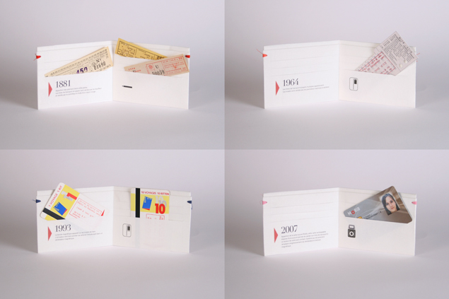

Timeline
—
Graduated from Graphic Design at ENSAV La Cambre, Brussels, after completing a BA Illustration at Saint-Luc, Brussels. I am currently in course at Interface3 to become a Webmaster and work as a freelance designer based in Brussels, looking for both work experience and collaboration opportunities. If you would like to know more about me or my work, do not hesitate to get in touch!